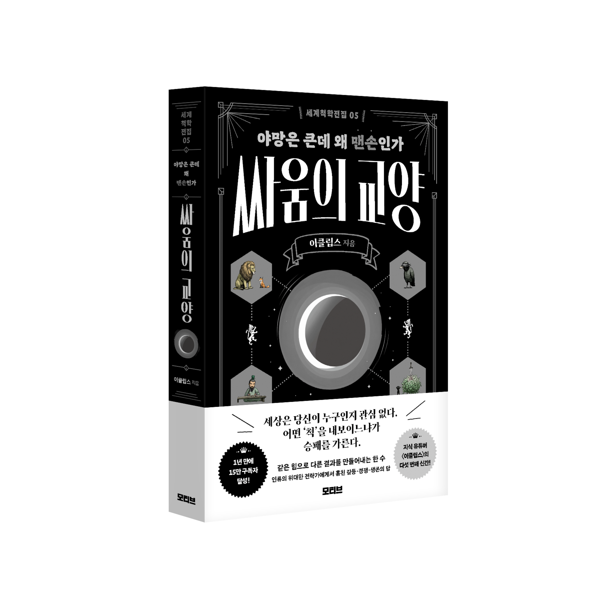

←
사고의 층
STAGE 1
1/5
STAGE 1
당신의 선택
이 선택이 의미하는 것
💡
발견한 원칙
💬
다음으로
🧠
당신의 사고 유형
📸 이미지 저장하기
친구한테 시켜보기
탐험 지도로 돌아가기
이 시뮬레이터의 바탕이 된 생각들이 궁금하다면

세계척학전집 — 싸움의 교양
야망은 큰데 왜 맨손인가
시리즈 더 보기
훔친 철학 편
훔친 심리학 편
훔친 부 편
사랑은 오해다